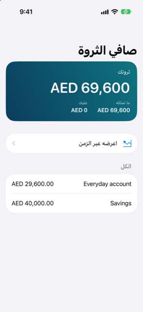
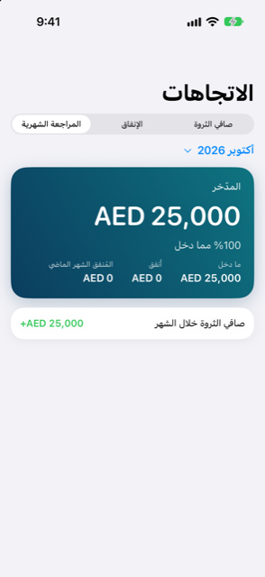

الدليل › نظرة عامة
الاتجاهات وصافي الثروة
صافي الثروة اليوم وعبر الزمن، والإنفاق شهرًا مقابل شهر، والمراجعة الشهرية.
للرؤى شاشتان للنظرة طويلة المدى. صافي الثروة يعرض كل ما تملكه ناقص كل ما عليك، اليوم، بعملتك الرئيسية. والاتجاهات يرسم صافي الثروة عبر الزمن، والإنفاق شهرًا مقابل شهر، ومراجعة شهر واحد.


متى تستخدمه
- تريد رقمًا واحدًا لثروتك، مع المكونات التي تتكوّن منها.
- تريد أن ترى إن كان ذلك الرقم يرتفع أم ينخفض عبر الأشهر.
- تريد مقارنة إنفاق هذا الشهر بالشهر الماضي، فئة فئة.
- في نهاية الشهر، تريد أن تستعرض ما دخل وما خرج وما وُفِّر.
صافي الثروة
افتح تبويب الرؤى واضغط على صافي الثروة. ويعرض الصف في شاشة الرؤى الرقم بالفعل، مع ما تملكه وما عليك.
- تعرض البطاقة العلوية ثروتك، مع ما تملكه وعليك إلى جوارها.
- وأسفلها صف اعرضه عبر الزمن، الذي يفتح الاتجاهات في تبويب صافي الثروة.
- إذا كنت ما زلت مدينًا بمال على مشتريات على مراحل، فهي مدرجة تحت موعود، لم يُدفع بعد، كل واحدة بتاريخ استحقاقها. ويأتي بعد هذه السطور سطر بعد هذه الالتزامات يعرض ما سيكون عليه صافي الثروة بمجرد سدادها. وهي لا تُحتسب ديونًا في الرقم العلوي.
- يسرد قسم الكل حساباتك وحيازاتك وأصولك وديونك، كلًّا بمبلغه بعملتك الرئيسية، أو بعملته الخاصة عندما لا يوجد سعر صرف له بعد. وتعرض الحيازة تقييمها كعدد وحدات مضروبًا في قيمة الوحدة، مع تاريخ التقييم. وتُظهر · غير محدّث عندما تصبح القيمة قديمة.
يحتسب صافي الثروة الاستثمارات والأصول الأخرى بالقيمة التي أعطيتها لها، لا فقط بما دفعته ثمنًا. والبند الذي يحتاج سعر صرف لم تضبطه يُعلَّم بـ"يحتاج سعر صرف لـ" مع ذكر اسم العملة. وما يبعد احتمال سداده يُترك خارج الحساب، بالسطر "مستبعد: من غير المرجح سداده".
الاتجاهات
اضغط على الاتجاهات في شاشة الرؤى — يفتح على تبويب المراجعة الشهرية. واختر واحدة من التبويبات الثلاثة في الأعلى.
صافي الثروة
مخطط لصافي الثروة عند نهاية كل شهر، وينتهي بنقطة لليوم. يُرسم من معاملاتك المسجَّلة والقيم التي أعطيتها للحيازات، فيتحرك عندما تسجل شيئًا أو تحدّث قيمة، لا من تلقاء نفسه. وتعطي بطاقة في الأعلى أحدث رقم ومقدار ما تغيّر منذ أقدم نقطة، مع تاريخ. ومع أقل من نهايتي شهر لعرضهما، تقول الشاشة لا يوجد سجل كافٍ بعد.
الإنفاق
مخطط أعمدة للإنفاق حسب الشهر، مع تلوين الفئات الخمس الأكبر عبر تلك الأشهر، وتجميع الباقي تحت أخرى. ويُعرض حتى ستة أشهر جنبًا إلى جنب. والشهر الأخير هو الشهر حتى الآن، لذا تغطي أرقامه الأيام التي مضت فقط. وتحته يسرد هذا الشهر مقابل الشهر الماضي حتى ثماني من أكبر الفئات مع ما تغيّر: سهم ومبلغ، ونسبة مئوية حيث يمكن حسابها. والفئة التي لم يكن لها شيء الشهر الماضي تقول جديد هذا الشهر. وتحمل التغييرات سهم إشارة ولونًا معًا، فتستطيع قراءة الاتجاه من أيّ منهما.
المراجعة الشهرية
مراجعة شهر واحد — آخر شهر كامل أولًا، أو أيّ من الأشهر في القائمة في الأعلى. ولا يظهر أي جزء إلا إذا كان فيه ما يُعرض:
- بطاقة المدّخر، أو المدّخر حتى الآن للشهر الجاري: ما دخل ناقص ما أُنفق، ونسبة من ما دخل إذا دخل شيء.
- ما دخل، وأُنفق، وعندما يوجد شهر سابق المُنفق الشهر الماضي إلى جانبه.
- أين ذهب: أكبر فئات الشهر مع تغيّرها عن الشهر الذي قبله.
- أكبر المصروفات: أكبر ثلاث دفعات مفردة في الشهر، مع تواريخها.
- صافي الثروة خلال الشهر: كيف تحرّك صافي ثروتك على مدار الشهر.
من الجيد أن تعرف
- كل الأرقام بعملتك الرئيسية، محوَّلة بالأسعار المحفوظة لديك. والمبلغ الذي لا سعر صرف له يُترك خارج المجاميع حتى تضبط سعرًا.
- يعرض الاتجاهات ستة أشهر على الأكثر من الإنفاق شهرًا بشهر؛ أما مخطط صافي الثروة فيرجع إلى ما قبل ذلك أكثر، بنقطة واحدة عند نهاية كل شهر.
- تُحتسب قائمة أكبر المصروفات من القيود المؤكدة فقط، وتستبعد تسويات المطابقة، حتى لا يُزيح الإنفاقَ الحقيقي تصحيحٌ أُجري لمجرد مطابقة كشف حساب.
- تقدّم هذه الشاشات معلومات عن سجلك أنت. وهي تقديرات وسجلات، لا نصيحة مالية.
مقالات ذات صلة
هل هناك شيء غير واضح أو ناقص؟ اكتب إلى support@raveniq.ai واذكر الصفحة.